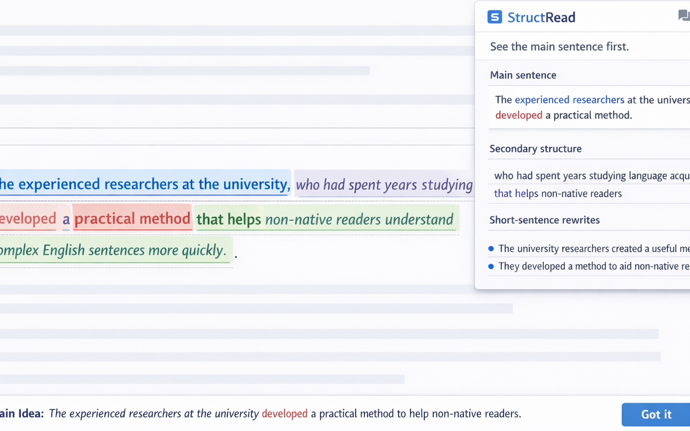
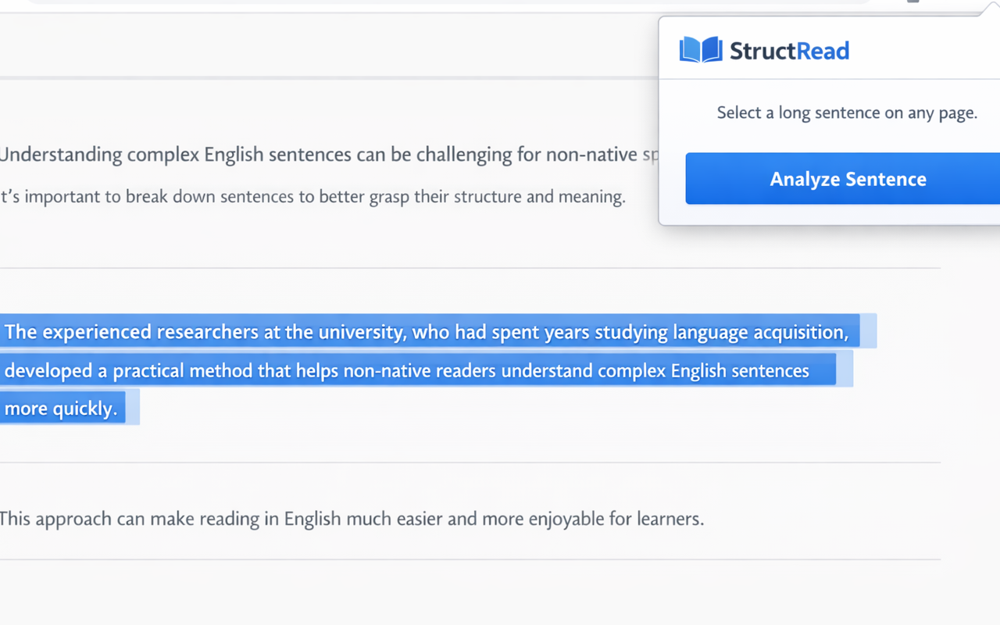
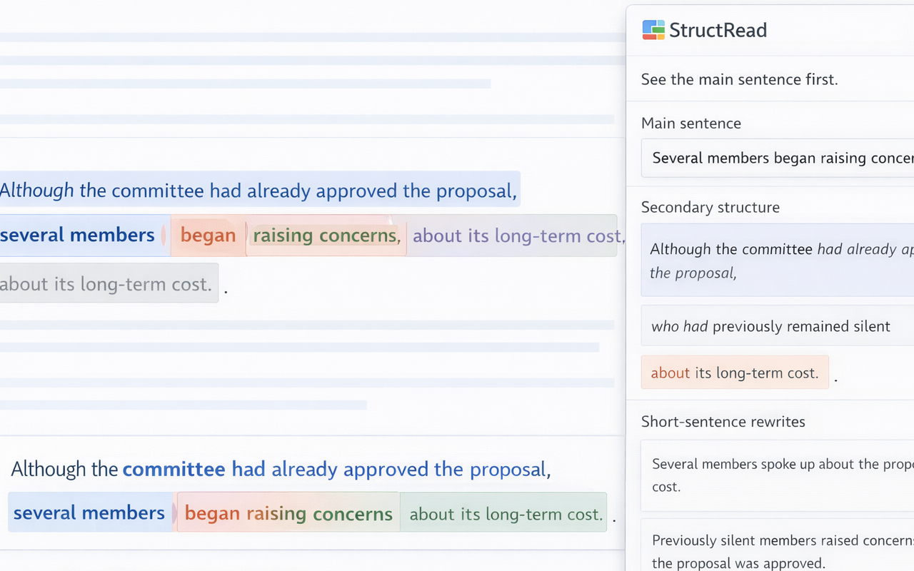
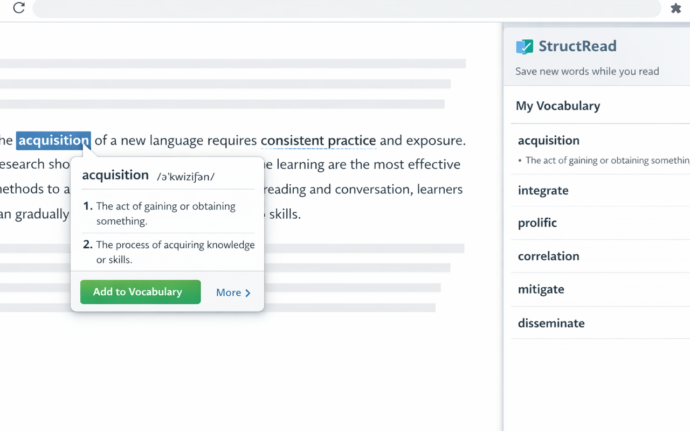
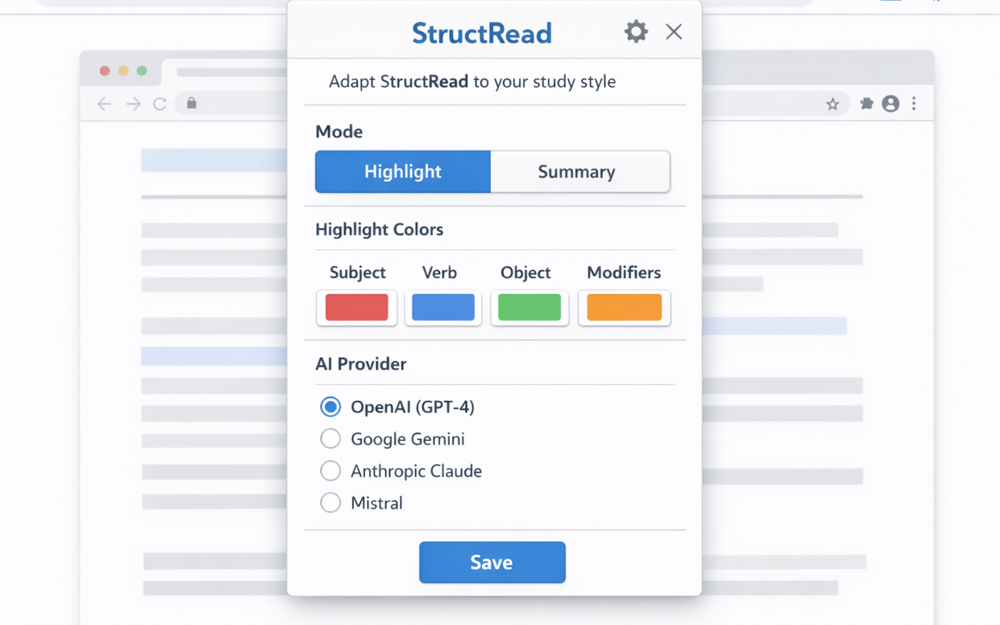

Parse the sentence
Select a sentence and let StructRead identify the core meaning instead of leaving you inside every modifier.
Chrome extension for English readers
StructRead turns dense English into a clear main sentence, highlights the supporting structure, and helps readers build understanding instead of guessing from fragments.

For readers who want comprehension first, not just translation.
Useful on articles, essays, documentation, and professional writing.
Supports both fast reading and slower structure learning.
What it does
Select a sentence and let StructRead identify the core meaning instead of leaving you inside every modifier.
See subjects, verbs, objects, and supporting parts in distinct colors so the sentence reads as a system.
Turn one difficult sentence into several short ideas that are easier to understand and remember.
Look up words and save vocabulary without breaking your reading flow or losing the sentence context.
Introduction
Highlight any English sentence on the webpage you are reading. A floating icon appears next to your selection.
Open the StructRead popup or tap the floating icon. The extension sends your selection to the AI provider you configured.
Speed Reading highlights the structure inline on the page. Learning opens a card with the core sentence and a grammar explanation.
Color legend
Tip: double-click a word inside a highlighted sentence to save it to your personal vocabulary list.
Who it is for
Understand long reading passages for tests, essays, and coursework.
Read reports, documentation, and work communication without slowing down on complex syntax.
Study real-world sentence patterns and improve reading comprehension through actual usage.
Screenshots




Privacy
StructRead processes text you explicitly select for analysis or lookup, vocabulary you choose to save, and extension settings needed to remember your preferences.
The extension does not sell user data, does not use user data for advertising or profiling, and stores saved items locally in Chrome storage.
Read the full privacy policy